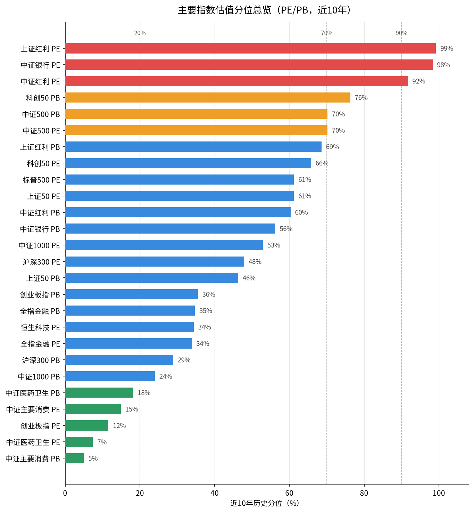
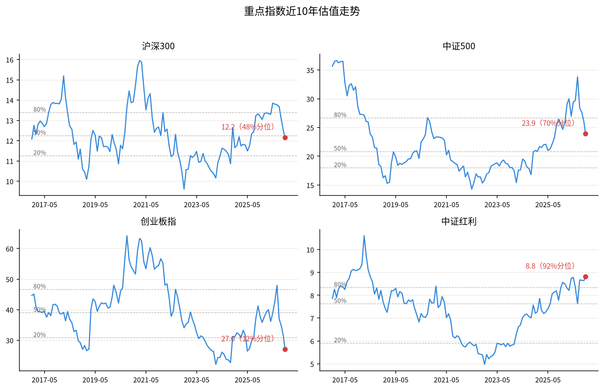

| 指数 | PE | PE分位 | 状态 | PB | PB分位 | 状态 | 日涨跌 |
|---|---|---|---|---|---|---|---|
| 宽基 | |||||||
| 上证50 | 10.68 | 61.2% (+0.0) | 合理 | 1.22 | 46.3% | 合理 | +1.21% |
| 中证1000 | 26.20 | 52.9% (+3.3) | 合理 | 2.11 | 24.0% | 合理 | +2.38% |
| 中证500 | 23.90 | 70.2% (+0.8) | 偏高 | 2.12 | 70.2% | 偏高 | +2.39% |
| 创业板指 | 27.01 | 11.6% (+5.0) | 低估 | 4.52 | 35.5% | 合理 | +4.16% |
| 沪深300 | 12.15 | 47.9% (+1.6) | 合理 | 1.35 | 28.9% | 合理 | +1.71% |
| 科创50 | 65.93 | 65.8% (+1.3) | 合理 | 6.63 | 76.3% | 偏高 | +3.04% |
| 行业 | |||||||
| 中证主要消费 | 20.18 | 14.9% (+3.3) | 低估 | 3.52 | 5.0% | 低估 | +1.44% |
| 中证医药卫生 | 23.51 | 7.4% (+1.6) | 低估 | 2.92 | 18.2% | 低估 | +2.35% |
| 中证银行 | 7.51 | 98.3% (+0.0) | 高估 | 0.71 | 56.2% | 合理 | -1.20% |
| 全指金融 | 7.49 | 33.9% (-4.9) | 合理 | 0.79 | 34.7% | 合理 | +0.02% |
| 策略 | |||||||
| 上证红利 | 9.18 | 99.2% (+0.0) | 高估 | 0.89 | 68.6% | 合理 | -0.60% |
| 中证红利 | 8.81 | 91.7% (-0.9) | 高估 | 0.87 | 60.3% | 合理 | +1.28% |
| 跨境（月频数据） | |||||||
| 宽基 | |||||||
| 恒生科技 | 28.23 | 34.4% (+0.0) | 合理 | - | - | 数据不足 | +2.05% |
| 标普500 | 25.22 | 61.2% (+0.0) | 合理 | - | - | 数据不足 | -0.53% |

